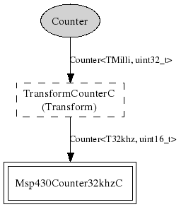

Component: tos.chips.msp430.timer.CounterMilli32C
configuration CounterMilli32C
CounterMilli32C provides at 32-bit counter at 1024 ticks per second.
- Author:
-
Cory Sharp <cssharp@eecs.berkeley.edu>
- See:
-
Please refer to TEP 102 for more information about this component and its
intended use.
Provides
interface
Counter<TMilli, uint32_t>
Wiring
